Case study · Marketing strategy & customer research
Éditions Komogi
Marketing Strategy & Customer Research
Individual projectHow an independent manga publisher could attract, convert and retain 18–35 readers in French-speaking Belgium: from desk research and interviews to a budgeted 12-month plan.
Mock-ups of the recommended social media campaign (deliverable, not an executed campaign).
ScopeFinal-year project of my Bachelor in Marketing (EPHEC). The strategy below is a set of recommendations built on my own research. None of the actions were executed or measured, so no commercial result is claimed.
Desk researchGoogle FormsCanvaPhotoshopQualitative studyQuantitative surveyMarketing strategyTrade marketingMedia planningBudgeting
01 · Context
A young independent publisher, one series, and a Belgian audience that does not know it yet.
Éditions Komogi is an independent manga publisher founded in Lyon in 2022. Its first series, The Lion in a Manga Library, was released on 27 January 2023 at €7.95, with two volumes available at the time of the study. In 2023 the publisher attended the Angoulême comics festival and Japan Expo, and the series was recommended by the ACBD Asia selection committee.
The market is crowded: manga is the leading genre of the French-language comics market, the offer is wide, digital formats are growing and paper costs are rising. For a small publisher, visibility in bookshops and online decides whether a series lives past its first volumes.
02 · Challenge
Turn a low-awareness series into something readers notice, buy and keep following.
How can a targeted marketing strategy attract, drive to purchase and keep the interest of manga readers aged 18 to 35 in French-speaking Belgium for the series “The Lion in a Manga Library”?
Three objectives framed the work:
- Measure Komogi's awareness among the target audience.
- Understand the target's reading, buying and media habits.
- Identify relevant, concrete marketing actions that answer the problem.
03 · My role
Individual project: research, analysis, strategy and defence.
I carried out every step alone, from the first desk research to the oral defence, under the supervision of the school.
Research
- Desk research on the market, the publisher and the target
- Interview guide and 8 qualitative interviews
- Questionnaire designed in Google Forms, 135 responses collected and analysed
- Analysis of the results, from motivations to media habits
04 · Approach & methodology
Four steps, each one feeding the next.
- 01Desk researchMarket, publisher, competitors, target
- 02Qualitative study8 readers: motivations, barriers, buying habits
- 03Quantitative survey135 respondents: quantify habits, test ideas
- 04RecommendationsActions, planning, budget
Framework
- Teasing
- Launch
- Support
- Relaunch
05 · Insights
What the surveyed readers said.
Figures from the quantitative survey (135 respondents). They describe the readers surveyed, not the whole market, and none of them is a sales result.
had never heard of Éditions Komogi.
Yet 26 respondents knew the series without having read it, and 28 had already seen it without remembering the title: the visual is noticed, the name is not.
had already bought a manga after seeing an ad in a bookshop or online.
Ads about manga are welcome as long as they are not too frequent.
buy their manga regularly in bookshops.
Among respondents already influenced by advertising, 20.5% cited a bookshop display.
rated 5/5 the idea of receiving goodies with a purchase.
Posters (24.8%) and key rings (20.8%) were the favourites.
gave 4/5 to debates and podcasts about manga.
A format already used by larger publishers to keep readers engaged between volumes.
Instagram, Facebook and TikTok were the most used networks.
16.3%, 16.4% and 18.2% of the answers respectively. Collector boxes also drew interest: 26.6% interested, and 83.7% ready to pay more for them.
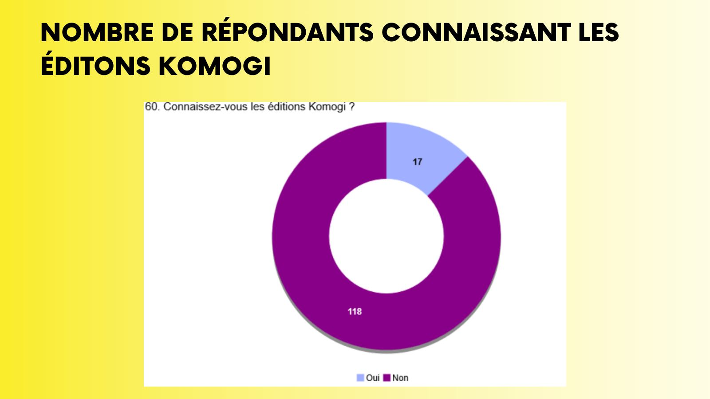
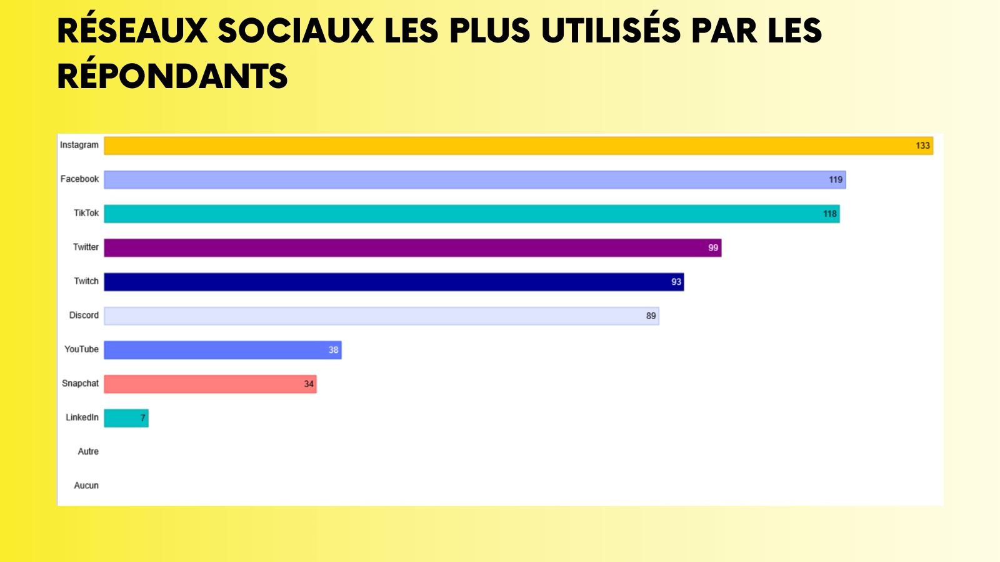
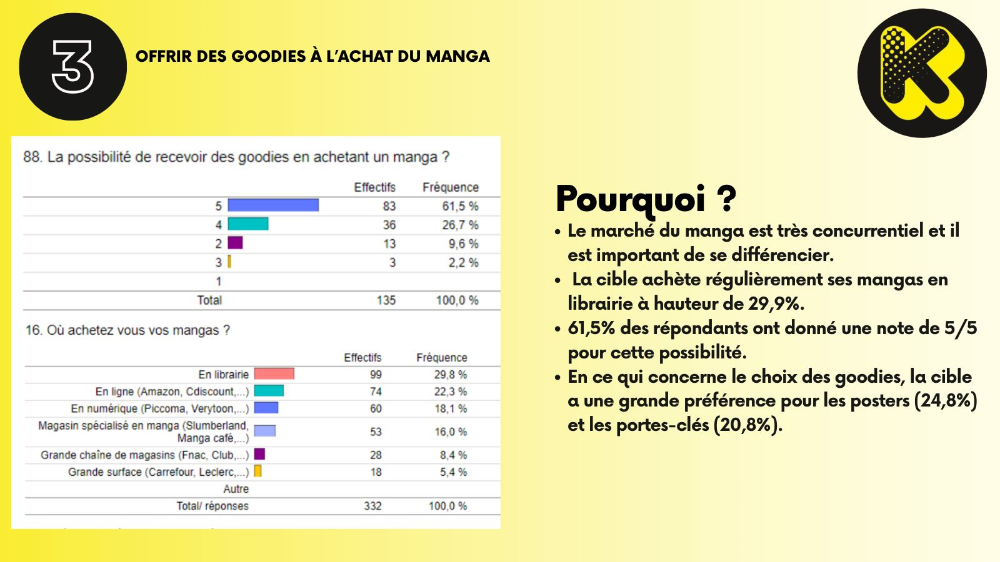
06 · Strategy
Six recommendations, one per moment of the reader's journey.
Each action is tied to a phase, a goal and a survey result. The main objective: make Komogi visible in French-speaking Belgium and build interest in its series.
TeasingAcquisitionDevelop visibility before a new volume
- 1Advertising campaign on social media and in partner bookshops
At least 30 days before a release on Instagram, Facebook and TikTok; posters, flyers and displays placed with partner bookshops.
LaunchConversionDrive the purchase at release
- 2Bookshop display at release
Point-of-sale presence with partner bookshops, plus manga conventions in French-speaking Belgium.
- 3Goodies with the purchase
Posters and key rings for a limited period, organised with the bookshops.
SupportRetentionKeep new readers interested
- 4Online debates and podcasts
Monthly debate sessions on Discord and podcasts before each release, announced on social media.
- 5Exclusive collector box
The four volumes with unpublished anecdotes and exclusive drawings by the author.
RelaunchReactivationRecruit new readers in slow periods
- 6Special offers
Complete-series box, first volume at €3 or price cuts: the promotions the target rated highest.
07 · Deliverables
From the questionnaire to a costed plan.
Extracts from the final presentation. Click an image to see it full size.
| Month | Action | Phase |
|---|---|---|
| 1 | Social media and bookshop advertising campaign | Teasing |
| 2 | Bookshop display at release | Launch |
| 3 | Goodies with the purchase | Launch |
| 4–6 | Online debates and podcasts | Support |
| 7–9 | Exclusive collector box | Support |
| 10–12 | Special offers | Relaunch |
Total estimated cost of the six recommendations: €1,643.60 excluding VAT, detailed per action in the budget deliverable.
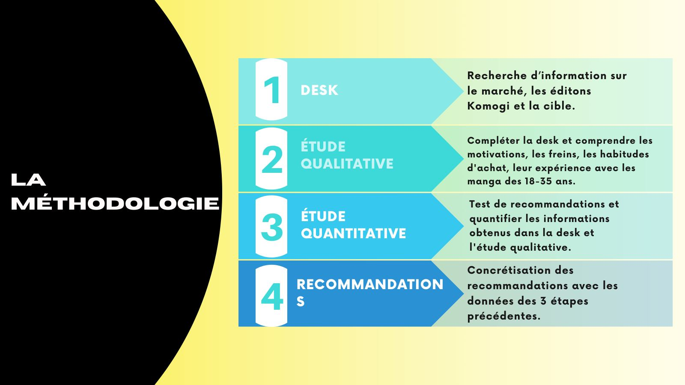
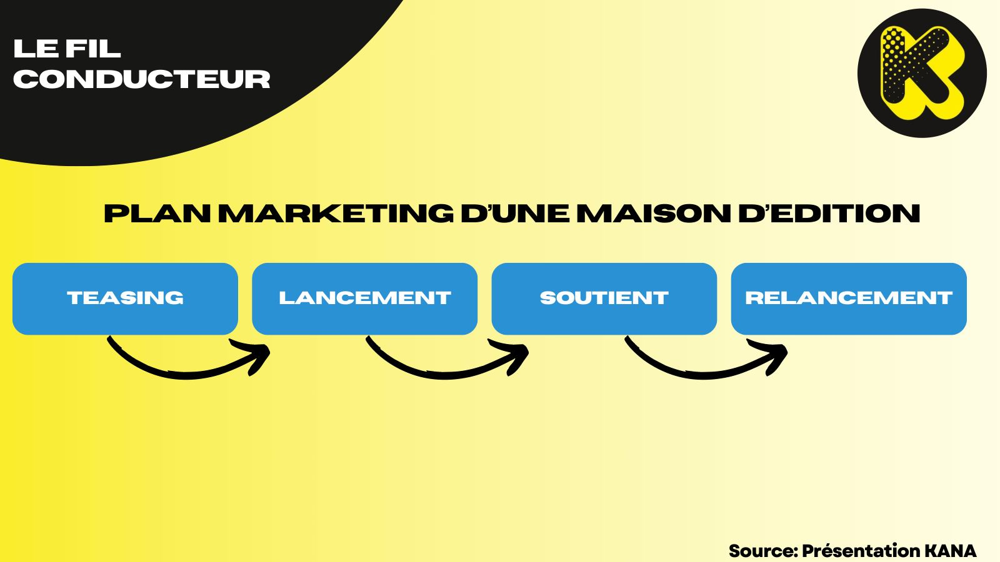
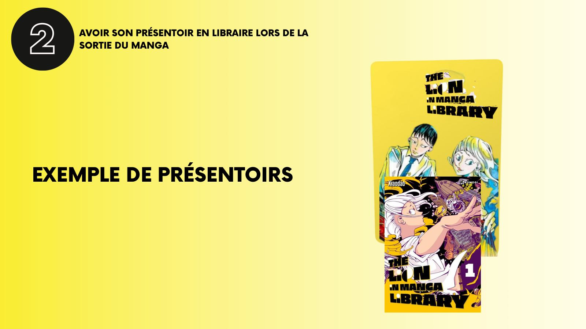
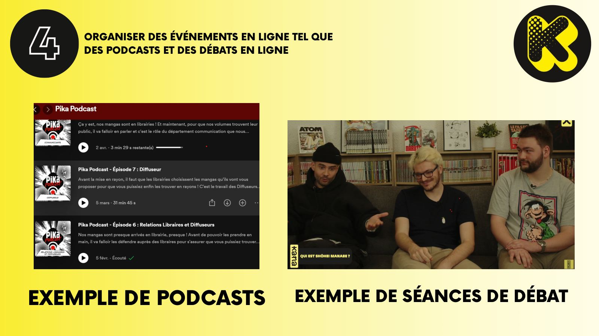
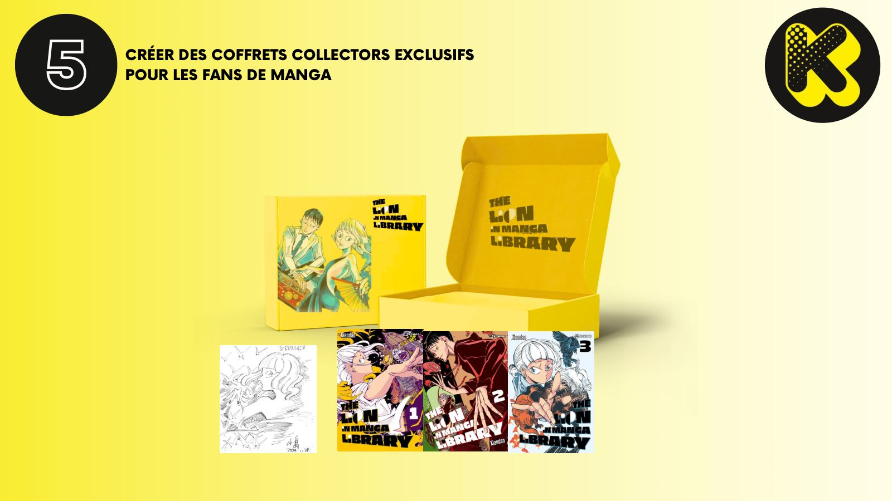
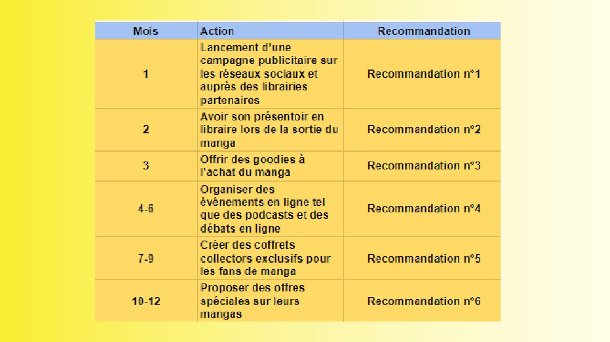
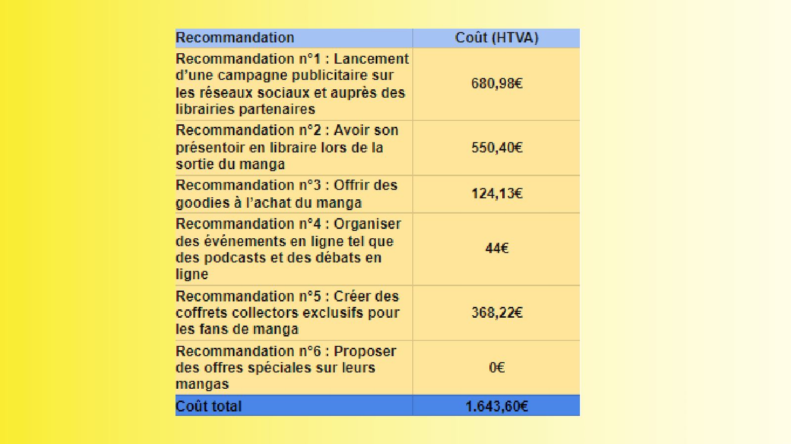
08 · Skills
Each skill, with what it produced here.
Designed an interview guide and a questionnaire, ran 8 interviews and collected 135 responses, then analysed habits, barriers and preferences.
→ InsightsTurned frequency tables and charts into a small number of decisions: which channels, which incentives, which moments.
→ Survey outputsBuilt a four-phase plan (teasing, launch, support, relaunch) with one clear goal per phase.
→ StrategyPoint-of-sale displays, goodies and bookshop partnerships, based on where the target actually buys.
→ DeliverablesSequenced the actions over twelve months and costed each one: €1,643.60 excl. VAT in total.
→ Planning and budgetPresented and defended the research, the recommendations and their limits in front of a jury.
→ Key learnings09 · Key learnings
“Before choosing a channel or an incentive, ask the audience. The survey changed the plan more than any assumption I started with.”
- Awareness comes firstWhen 87% of the target has never heard of you, visibility beats every other lever. The plan starts there.
- Test ideas before recommending themGoodies, podcasts, boxes and offers were all scored by respondents before entering the plan.
- Know the limits of a sample135 respondents describe the readers surveyed, not the whole market. The recommendations are framed as a plan to test, not as guaranteed outcomes.
10 · Next project
Team project · Customer insights & omnichannel strategy
Mangetsu
How a manga publisher can support a series volume after volume: nine recommendations on the reader's journey, from TikTok and Discord to a QR code and an app.
View case study→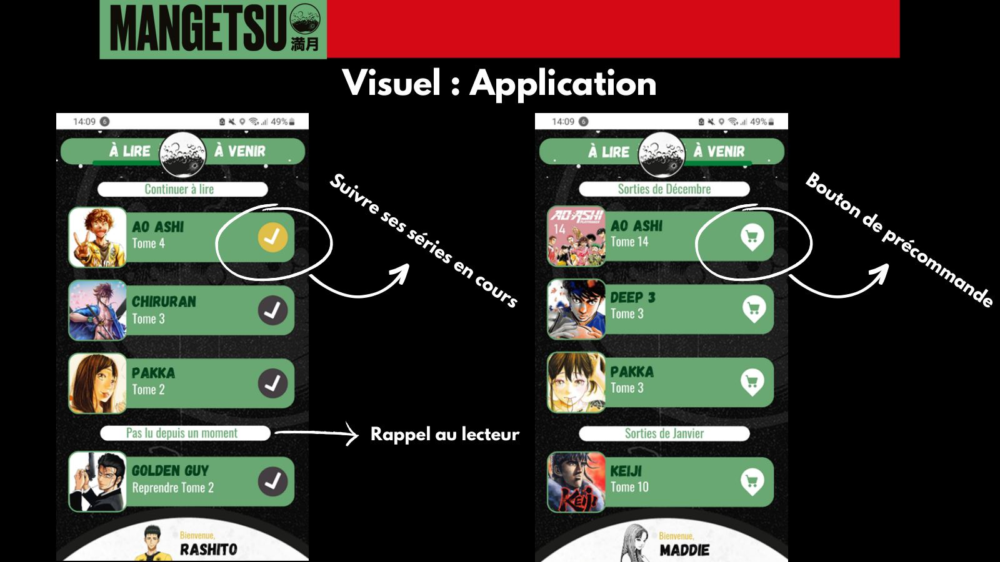